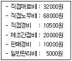

한식조리기능사 (2007-07-15 기출문제)
1과목: 식품위생 및 법규
1. 다음 중 식품위생법상 식품위생의 대상은?
- 식품, 약품, 기구, 용기, 포장
- 조리법, 조리시설, 기구, 용기, 포장
- 식품, 조리시설, 기구, 용기, 포장
- 식품, 식품첨가물, 기구, 용기, 포장
(정답률: 87%)

2. 조리사가 타인에게 면허를 대여하여 사용하게 한 때 1차 위반시 행정처분 기준은?
- 업무정지 1월
- 업무정지 2월
- 업무정지 3월
- 면허취소
(정답률: 53%)
3. 판매를 목적으로 하는 식품에 사용하는 기구, 용기포장의 기준과 규격을 정하는 기관은?
- 농림부
- 산업자원부
- 보건소
- 식품의약품안전청
(정답률: 92%)
4. 다음 중 식품위생감시원의 직무가 아닌 것은?
- 식품 제조방법에 대한 기준 설정
- 시설기준의 적합 여부의 확인/검사
- 식품 등의 압류, 폐기 등
- 영업소의 폐쇄를 위한 간판제거 등의 조치
(정답률: 47%)
5. 식품위생수준 및 자질의 향상을 위하여 조리사 및 영양사에게 교육을 받을 것을 명할 수 있는 자는?(관련 규정 개정전 문제로 여기서는 기존 정답인 1번을 누르면 정답 처리됩니다. 자세한 내용은 해설을 참고하세요.)
- 보건복지부장관
- 식품의약품안전청장
- 보건소장
- 시장 군수 구청장
(정답률: 47%)
6. 식품위생 행정을 과학적으로 뒷받침하는 중앙 기구로 시험, 연구업무를 수행하는 기관은?
- 시/도 위생과
- 국립의료원
- 식품의약품안전청
- 경찰청
(정답률: 87%)
7. 다음 중 식품의 부패와 가장 거리가 먼 것은?
- 토코페롤
- 단백질
- 미생물
- 유기물
(정답률: 72%)
8. 손에 상처가 있는 사람이 만든 크림빵을 먹은 후 식중독 증상이 나타났을 경우, 가장 의심되는 식중독 균은?
- 포도상구균
- 클로스트리디움 보툴리늄
- 병원성 대장균
- 살모넬라균
(정답률: 70%)
9. 다음 중 세균성 식중독에 해당하는 것은?
- 감염형 식중독
- 자연산 식중독
- 화학적 식중독
- 곰팡이독 식중독
(정답률: 71%)
10. 간장독을 일으키는 곰팡이독은?
- 파툴린(patulin)
- 시트리닌(citrinin)
- 말토리진(maltoryzine)
- 아플라톡신(aflatoxin)
(정답률: 84%)
11. 다음 식품첨가물 중 유해한 착색료는?
- 아우라민
- 둘신
- 롱가릿
- 붕산
(정답률: 49%)
12. 식중독 예방과 가장 관련이 적은 것은?
- 식재료 및 기구의 청결
- 기생충 구제
- 식품의 적절한 온도관리
- 조리자의 위생관리
(정답률: 81%)
13. 육류의 발색제로 사용되는 아질산염이 산성조건에서 식품 성분과 반응하여 생성되는 발암성 물질은?
- 지질 과산화물
- 벤조피렌
- 니트로사민
- 포름알데히드
(정답률: 46%)
14. 세균성 식중독의 일반적인 특성으로 틀린 것은?
- 주요 증상은 두통, 구역질, 구토, 복통 설사이다
- 살모넬라균, 장염 비브리오균, 포도상구균 등이 원인이다.
- 감염 후 면역성이 획득된다.
- 발병하는 식중독의 대부분은 세균에 의한 세균성 식중독이다.
(정답률: 70%)
15. 다음 중 독버섯의 유독 성분은?
- 솔라닌
- 무스카린
- 아미그달린
- 테트로도톡신
(정답률: 75%)
2과목: 식품학
16. 다음 중 결합수의 특성이 아닌 것은?
- 수증기압이 유리수보다 낮다.
- 압력을 가해도 제거하기 어렵다.
- 0℃에서 매우 잘 언다.
- 용질에 대해서 용매로서 작용하지 않는다.
(정답률: 76%)
17. 곡류에 관한 설명으로 옳은 것은?
- 박력분은 글루텐의 함량이 13% 이상으로 케익 제조에 알맞다.
- 박력분은 글루텐의 햠량이 10% 이하로 과자, 비스킷 제조에 알맞다.
- 보리의 고유한 단백질은 오리제닌이다.
- 압맥, 할맥은 소화율을 저하시킨다.
(정답률: 73%)
18. 전분을 구성하는 주요 원소가 아닌 것은?
- 탄소(C)
- 수소(H)
- 질소(N)
- 산소(O)
(정답률: 66%)
19. 마멀레이드(marmalade)에 대하여 바르게 설명한 것은?
- 과일즙에 설탕을 넣고 가열/농축한 후 냉각시킨 것이다
- 과일의 과육을 전부 이용하여 점성을 띠게 농축한 것이다.
- 과일즙에 설탕, 과일의 껍질, 과육의 얇은 조각을 섞어 가열, 농축한 것이다.
- 과일을 설탕시럽과 같이 가열하여 과일이 연하고 투명한 상태로 된 것이다.
(정답률: 68%)
20. 인체에 필요한 직접 영양소는 아니지만, 식품에 색, 냄새, 맛 등을 부여하여 식욕을 증진시킨 것은?
- 단백질 식품
- 인스턴트 식품
- 기호 식품
- 건강 식품
(정답률: 71%)
21. 전분 가루를 물에 풀어두면 금방 가라앉는데, 주된 이유는?
- 전분이 물에 완전히 녹으므로
- 전분의 비중이 물보다 무거우므로
- 전분의 호화현상 때문에
- 전분의 유화현상 때문에
(정답률: 74%)
22. 두류 가공품 중 발효과정을 거치는 것은?
- 두유
- 피넛 버터
- 유부
- 된장
(정답률: 82%)
23. 강화미에서 가장 우선적으로 강화해야 할 영양소로 짝지어진 것은?
- 비타민 A, 비타민 B1
- 비타민 D, 칼슘
- 비타민 B1, 비타민 B2
- 비타민 D, 나이아신
(정답률: 59%)
24. 다음 중 식품의 손질방법이 잘못된 것은?
- 해파리를 끓는 물에 오래 삶으면 부드럽게 되고 짠맛이 잘 제거된다.
- 청포묵의 겉면이 굳었을 때는 끓는 물에 담갔다 건져 부드럽게 한다.
- 양장피는 끓는 물에 삶은 후 찬물에 헹구어 조리한다.
- 도토리묵에서 떫은 맛이 심하게 나면 따뜻한 물에 담가두었다가 사용한다.
(정답률: 65%)
25. 우유의 저온장시간살균법에서의 처리 온도와 시간은?
- 50~55℃에서 50분간
- 63~65℃에서 30분간
- 76~78℃에서 15초간
- 130℃에서 1초간
(정답률: 59%)
26. 생선묵의 점탄성을 부여하기 위해 첨가하는 물질은?
- 소금
- 전분
- 설탕
- 술
(정답률: 58%)
27. 식품의 단백질이 변성되었을 때 나타나는 현상이 아닌 것은?
- 소화효소의 작용을 받기 어려워진다.
- 용해도가 감소한다.
- 점도가 증가한다.
- 폴리펩티드(polypeptide) 사슬이 풀어진다.
(정답률: 37%)
28. 20%의 수분(분자량:18)과 20%의 포도당(분자량:180)을 함유하는 식품의 이론적인 수분활성도는 약 얼마인가?
- 0.82
- 0.88
- 0.91
- 1
(정답률: 48%)
29. 펜토산(pentosan)으로 구성된 석세포가 들어 있으며, 즙을 갈아 넣으면 고기가 연해지는 식품은?
- 배
- 유지
- 귤
- 레몬
(정답률: 86%)
30. 영양소와 급원식품의 연결이 옳은 것은?
- 동물성 단백질 - 두부, 쇠고기
- 비타민 A - 당근, 미역
- 필수지방산 - 대두유, 버터
- 칼슘 - 우유, 뱅어포
(정답률: 72%)
3과목: 조리이론과 원가계산
31. 각 조리법의 유의사항으로 옳은 것은?
- 떡이나 빵을 찔 때 너무 오래 찌면 물이 생겨 형태와 맛이 저하된다.
- 멸치국물을 낼 때 끓는 물에 멸치를 넣고 끓여야 수용성 단백질과 지미성분이 빨리 용출되어 맛이 좋아진다.
- 튀김 시 기름의 온도를 측정하기 위하여 소금을 떨어뜨리는 것은 튀김기름에 영향을 주지 않으므로 온도계를 사용하는 것보다 더 합리적이다.
- 물오징어 등을 삶을 때 둥글게 말리는 것은 가열에 의해 무기질이 용출되기 때문이므로 내장이 있는 안쪽 면에 칼집을 넣어준다.
(정답률: 44%)
32. 노화가 잘 일어나는 전분은 다음 중 어느 성분의 함량이 높은가?
- 아밀로오스
- 아밀로 펙틴
- 글리코겐
- 한천
(정답률: 49%)
33. 녹색 채소를 데칠 때 소다를 넣을 경우 나타나는 현상이 아닌 것은?
- 채소의 질감이 유지된다.
- 채소의 색을 푸르게 고정시킨다.
- 비타민 C가 파괴된다.
- 채소의 섬유질을 연화시킨다.
(정답률: 50%)
34. 어패류의 조리법에 대한 설명으로 옳은 것은?
- 조개류는 높은 온도에서 조리하여 단백질을 급격히 응고시킨다.
- 바닷가재는 껍질이 두꺼우므로 찬물에 넣어 오래 끓여야 한다.
- 작은 생새우는 강한 불에서 연한 갈색이 될 때 까지 삶은 후 배 쪽에 위치한 모래정맥을 제거한다.
- 생선숙회는 신선한 생선편을 끓는 물에 살짝 데치거나 끓는 물을 생선에 끼얹어 회로 이용한다.
(정답률: 72%)
35. 위의 소화작용에 의해 반액체 상태로 된 유미즙의 소화가 본격적으로 진행되는 곳은?
- 맹장
- 소장
- 대장
- 간장
(정답률: 72%)
36. 다음 중 성인의 필수아미노산이 아닌 것은?
- 트립토판
- 리신
- 메티오닌
- 티로신
(정답률: 40%)
37. 신선도가 저하된 생선의 설명으로 옳은 것은?
- 히스타민 함량이 많다.
- 꼬리가 약간 치켜 올라갔다.
- 살이 탄력적이다.
- 비늘이 고르게 밀착되어 있다.
(정답률: 79%)
38. 학교급식의 목적과 가장 거리가 먼 것은?
- 편식 습관의 교정
- 국민 체력 향상의 기초 확립
- 질병치료
- 국민 식생활의 개선
(정답률: 90%)
39. 원가에 대한 설명으로 틀린 것은?
- 원가의 3요소는 재료비, 노무비, 경비이다.
- 간접비는 여러 제품의 생산에 대하여 공통으로 사용되는 원가이다.
- 직접비에 제조 시 소요된 간접비를 포함한 것은 제조원가 이다.
- 제조원가에 관리 비용만 더한 것은 총원가이다.
(정답률: 48%)
40. 집단급식소의 설치, 운영자의 준수사항으로 틀린 것은?
- 유통기한이 경과된 원료 또는 완제품을 조리할 목적으로 보관하거나 이를 음식물의 조리에 사용하여서는 아니 된다.
- 깨끗한 지하수를 식기 세척의 용도로만 사용할 경우 별도의 검사를 받지 않아도 된다.
- 동물의 내장을 조리한 경우에는 이에 사용한 기계, 기구류 등을 세척하고 살균하여야 한다.
- 물수건, 숟가락, 젓가락, 식기 등은 살균/소독제 또는 열탕의 방법으로 소독한 것을 사용하여야 한다.
(정답률: 89%)
41. 튀김 조리시 흡유량에 대한 설명으로 틀린 것은?
- 흡유량이 많으면 입안에서의 느낌이 나빠진다.
- 흡유량이 많으면 소화속도가 느려진다.
- 튀김시간이 길어질수록 흡유량이 많아진다.
- 물수건, 숟가락, 젓가락, 식기 등은 살균소독제 또는 열탕의 방법으로 소독한 것을 사용하여야 한다.
(정답률: 66%)
42. 단체급식소에서 식수인원 500명의 풋고추조림을 할 때 풋고추의 총발주량은 약 얼마인가? (단, 풋고추 1인분 30g, 풋고추의 폐기율 6%)
- 15kg
- 16kg
- 20kg
- 25kg
(정답률: 59%)
43. 다음 중 간장의 지미 성분은?
- 포도당
- 전분
- 글루탐산
- 아스코르빈산
(정답률: 60%)
44. 식품의 감별법으로 옳은 것은?
- 돼지고기는 진한 분홍색으로 지방이 단단하지 않은 것
- 고등어는 아가미가 붉고 눈이 들어가고 냄새가 없는 것
- 계란은 껍질이 매끄럽고 광택이 있는 것
- 쌀은 알갱이가 고르고 광택이 있으며 경도가 높은 것
(정답률: 63%)
45. 동결 중 식품에 나타나는 변화가 아닌 것은?
- 단백질 변성
- 지방의 산화
- 탄수화물 호화
- 비타민 손실
(정답률: 47%)
46. “밥, 시금치국, 삼치조림, 김구이, 사과“ 의 식단에서 부족한 영양소는?
- 단백질
- 지질
- 칼슘
- 비타민
(정답률: 49%)
47. 곰국이나 스톡을 조리하는 방법으로 은근하게 오랫동안 끓이는 조리법은?
- 포우칭
- 스티밍
- 블랜칭
- 시머링
(정답률: 61%)
48. 다음과 같은 자료에서 계산한 제조원가는?

- 13⑤00원
- 14⑤00원
- 145500원
- 155500원
(정답률: 50%)
49. 감자를 썰어 공기 중에 놓아두면 갈변되는데 이 현상과 가장 관계가 깊은 효소는?
- 아밀라이제
- 티로시나아제
- 얄라핀
- 미로시나제
(정답률: 43%)
50. 마늘에 함유된 황화합물로 특유의 냄새를 가지는 성분은?
- 알리신
- 디메틸설파이드
- 머스타드 오일
- 캅사이신
(정답률: 91%)
4과목: 공중보건
51. 공중보건의 사업단위로 가장 알맞은 것은?
- 개인
- 직장
- 가족
- 지역사회
(정답률: 89%)
52. 대기 오염 물질로 산성비의 원인이 되며 달걀이 썩는 자극성 냄새가 나는 기체는?
- 일산화 탄소(CO)
- 이산화황(SO2)
- 이산화질소(NO2)
- 이산화탄소(CO2)
(정답률: 54%)
53. 파리 구제의 가장 효과적인 방법은?
- 성충을 구제하기 위하여 살충제를 분무한다.
- 방충망을 설치한다.
- 천적을 이용한다.
- 환경위생의 개선으로 발생원을 제거한다.
(정답률: 75%)
54. 다음 중 전염병을 관리하는데 있어 가장 어려운 대상은?
- 급성전염병환자
- 만성전염병환자
- 건강보균자
- 식중독환자
(정답률: 72%)
55. 다음 중 국가필수예방접종 질병으로 생후 가장 먼저 실시하는 것은?
- 홍역
- 디프테리아
- 결핵
- 파상풍
(정답률: 75%)
56. 회충 알은 인체로부터 무엇과 함께 배출되는가?
- 분변
- 소변
- 콧물
- 혈액
(정답률: 90%)
57. 전염병과 발생원인의 연결이 틀린 것은?
- 장티푸스-파리
- 일본뇌염-큐렉스속 모기
- 임질-직접 감염
- 유행성 출혈열-중국얼룩날개 모기
(정답률: 61%)
58. 수질오염 중 부영양화 현상에 대한 설명으로 틀린 것은?
- 혐기성 분해로 인한 냄새가 난다.
- 물의 색이 변한다.
- 수면에 엷은 피막이 생긴다.
- 용존산소가 증가된다.
(정답률: 70%)
59. 다음 중 강한 산화력에 이한 소독효과를 가지는 것은?
- 크레졸
- 석탄산
- 과망간산칼륨
- 알코올
(정답률: 27%)
60. 기생충과 중간숙주와의 연결이 잘못된 것은?
- 간흡충 - 쇠우렁, 참붕어
- 요꼬가와흡충 - 다슬기, 은어
- 폐흡충 -다슬기, 게
- 광절열두조충 - 돼지고기, 소고기
(정답률: 66%)